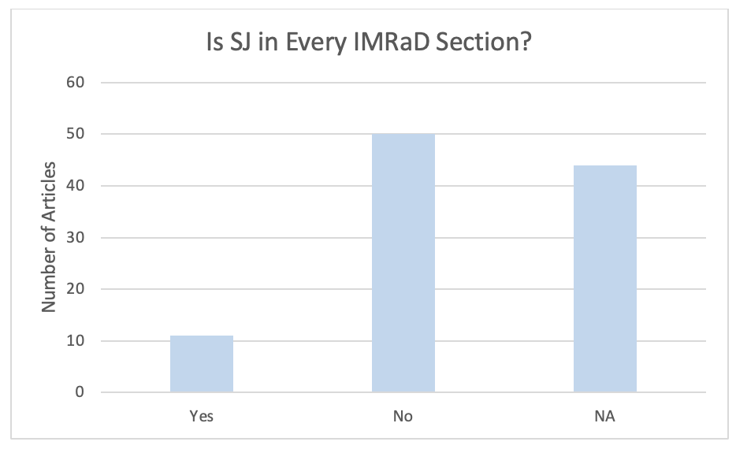
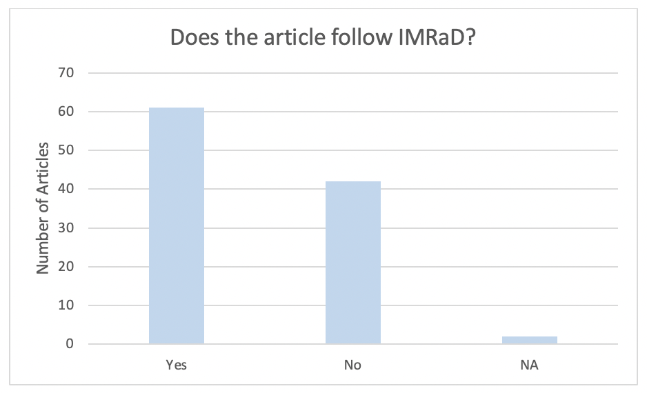
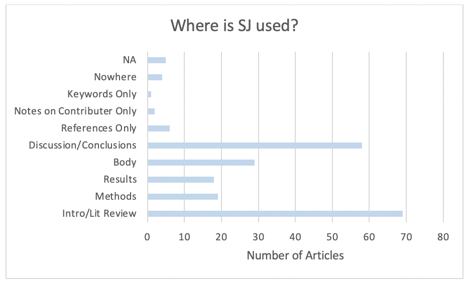
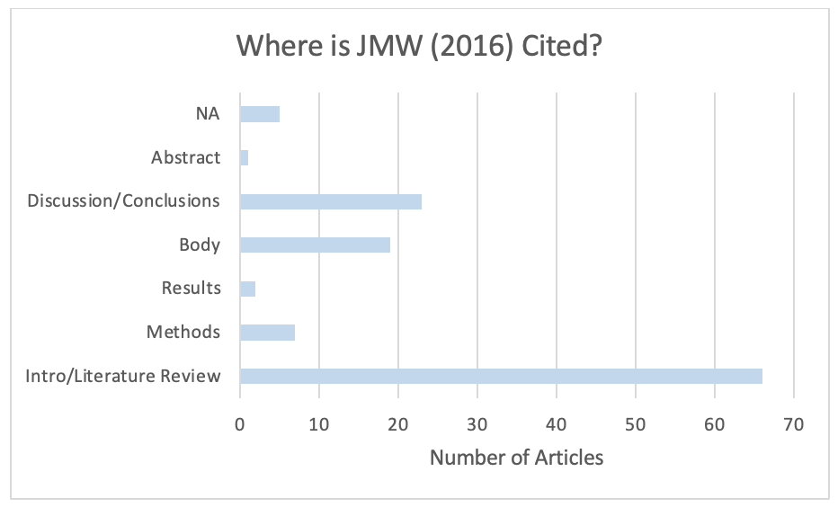

Excel
In an attempt to better understand how technical communication publications engage with social justice, I did some manual and computer-assisted counting within each of the publications that cited Jones, Moore, and Walton (2016). Specifically, I used the Command-F function on my Mac to count how many times the publications used “social justice” in the main text.
I also used the Command-F function to find where sources cited Jones, Moore, and Walton (2016) and I tracked the sections of the text where “social justice” was used and where Jones, Moore, and Walton (2016) were cited.
Looking into Sections of the Texts




The information I found in this section still doesn’t provide answers to my research questions but it brings me closer to answers or at least shows me where I might find answers.